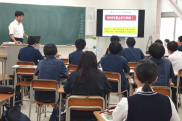

進路と卒業生
業界を知る学び
技術を学ぶだけでなく、仕事の役割や進路の選び方を外部講師から学びます。
ゲーム業界セミナー
2024年はゲーム業界の動向、専門職の仕事内容、目標設定、進路選択について講演を受けました。
情報モラル講演
同年にはSNSによる人権侵害、ネットトラブル、情報モラル、ネット依存を扱う講演も行われました。
技術と社会を結ぶ
作れることと安全に使えること、働き方を知ることを組み合わせて進路探究を進めます。

進路と卒業生
技術を学ぶだけでなく、仕事の役割や進路の選び方を外部講師から学びます。
2024年はゲーム業界の動向、専門職の仕事内容、目標設定、進路選択について講演を受けました。
同年にはSNSによる人権侵害、ネットトラブル、情報モラル、ネット依存を扱う講演も行われました。
作れることと安全に使えること、働き方を知ることを組み合わせて進路探究を進めます。
